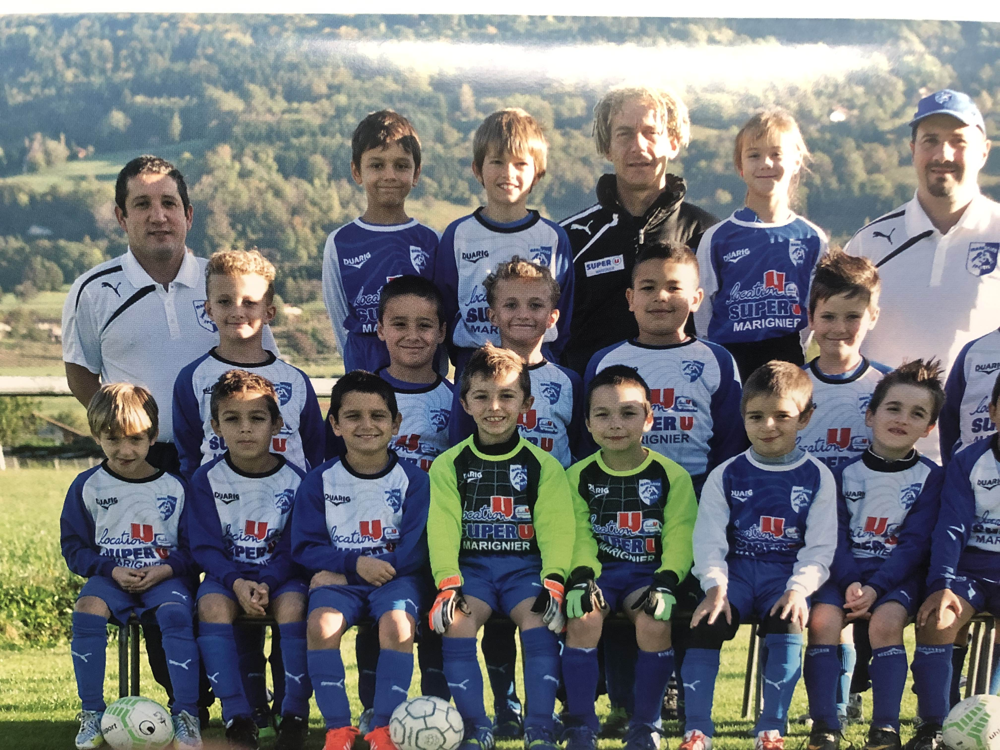
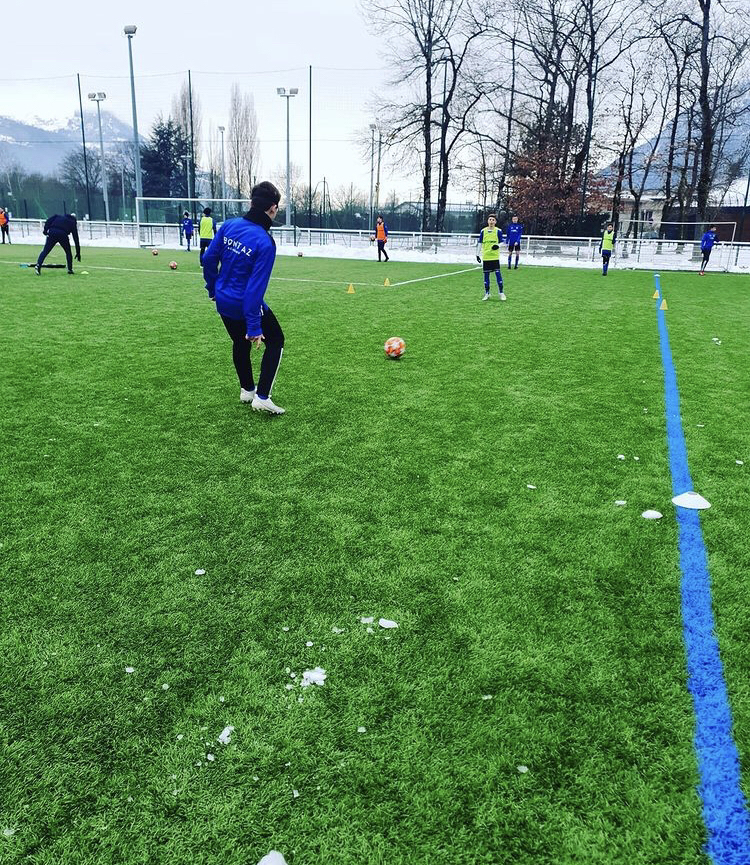
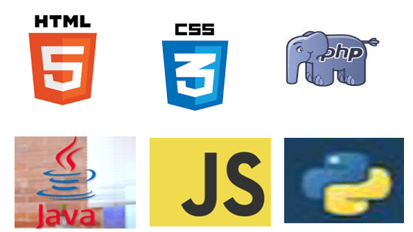

Centers of Interest
Sports
Since my early childhood, I have regularly practiced different sports. Everything started with football at the age of 5 until I was 17. I had the chance to be part of the departmental team and play at the highest youth level in France against the best teams in the region.   I also practiced many other sports in the meantime, such as skiing, running, walking, cycling... Last year, I also had the opportunity to discover combat sports with wrestling. It was a very enriching experience that allowed me to see the world from a different perspective.
Computer Science
Since the beginning of high school, I already had an idea of the field of work
I wanted to pursue. I have always had a kind of passion or obsession for computer science.
Our future will be entirely shaped by new technologies that continue to progress towards tomorrow.
That is why I chose the R&T program; it covers many fields
that will all be important in the future, such as different programming languages, networking,
cybersecurity, telecommunications, and more. This program was for me the best way to move
towards a future where many opportunities will be available to me.
